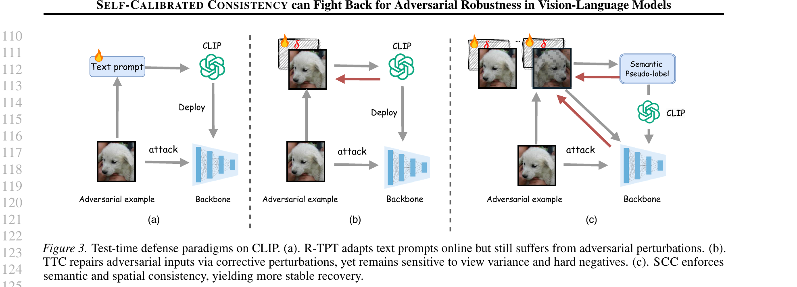
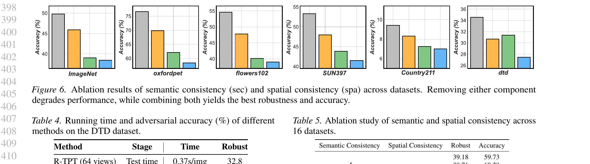

Pre-trained vision–language models (VLMs) such as CLIP have demonstrated strong zero-shot capabilities across diverse domains, yet remain highly vulnerable to adversarial perturbations that disrupt image–text alignment and compromise reliability. Existing defenses typically rely on adversarial fine-tuning with labeled data, limiting their applicability in zero-shot settings.
In this work, we identify two key weaknesses of current CLIP adversarial attacks—lack of semantic guidance and vulnerability to view variations—collectively termed semantic and viewpoint fragility. To address these challenges, we propose Self-Calibrated Consistency (SCC), an effective test-time defense. SCC consists of two complementary modules: Semantic consistency, which leverages soft pseudo-labels from a counterattack warm-up and multi-view predictions to regularize cross-modal alignment and separate target embeddings from confusable negatives; and Spatial consistency, aligning perturbed visual predictions via augmented views to stabilize inference under adversarial perturbations.
Together, these modules form a plug-and-play inference strategy. Extensive experiments on 22 benchmarks under diverse attack settings show that SCC consistently improves the zero-shot robustness of CLIP while maintaining accuracy, and can be seamlessly integrated with other VLMs for further gains. These findings highlight the great potential of establishing an adversarially robust paradigm from CLIP, with implications extending to broader VLMs such as BiomedCLIP.

Test-time defense paradigms on CLIP. (a) R-TPT adapts text prompts online but still suffers from adversarial perturbations. (b) TTC repairs adversarial inputs but remains sensitive to view variance and hard negatives. (c) SCC enforces semantic and spatial consistency, yielding more stable recovery.
A short counterattack warm-up produces a soft pseudo-label tsoft = ∑k pk tk that retains the full prediction distribution. A confidence-weighted cross-modal alignment term then pulls the embedding back toward the correct class space and suppresses hard-negative drift.
A handful of cheap augmented views (horizontal flip + low-variance Gaussian noise) are aggregated to produce a stable prediction, mitigating the view fragility exposed in our analysis. The same corrective perturbation is reused across views, so the additional cost over TTC is marginal.
Classification accuracy (Acc.) and adversarial accuracy (Rob.) under PGD-10 attack
(εa = 1/255) across 16 datasets.
SCC is a pure test-time defense — no adversarial fine-tuning, no labels.
Δ = improvement over vanilla CLIP.
| Dataset | Metric | CLIP | Adversarial Finetuning | Test-time Defense | Δ | ||||||||
|---|---|---|---|---|---|---|---|---|---|---|---|---|---|
| — | CLIP-FT | TeCoA | PMG-AFT | FARE | RN | Anti-adv | HD | TTC | DOC | SCC (ours) | |||
| CIFAR-10 | Rob. | 0.74 | 3.34 | 33.61 | 40.66 | 19.65 | 2.01 | 12.39 | 17.22 | 28.75 | 47.78 | 59.18 | +58.44 |
| Acc. | 85.12 | 84.90 | 64.61 | 70.69 | 74.44 | 81.18 | 83.52 | 78.23 | 81.18 | 81.99 | 82.24 | -2.88 | |
| STL-10 | Rob. | 11.00 | 12.73 | 70.08 | 73.08 | 59.06 | 16.23 | 37.42 | 39.02 | 76.70 | 86.33 | 90.50 | +79.50 |
| Acc. | 96.40 | 94.49 | 87.40 | 88.56 | 91.72 | 95.85 | 95.45 | 89.50 | 95.85 | 96.04 | 95.62 | -0.78 | |
| ImageNet | Rob. | 1.15 | 0.93 | 18.89 | 21.43 | 14.00 | 1.77 | 8.67 | 6.63 | 38.41 | 43.72 | 49.77 | +48.62 |
| Acc. | 59.69 | 54.24 | 34.89 | 36.12 | 48.79 | 59.34 | 54.27 | 54.54 | 49.39 | 46.46 | 56.03 | -3.66 | |
| OxfordPets | Rob. | 1.04 | 2.10 | 38.35 | 41.18 | 31.07 | 1.86 | 20.42 | 12.04 | 57.87 | 67.18 | 76.67 | +75.63 |
| Acc. | 87.44 | 84.14 | 62.12 | 65.88 | 79.37 | 87.41 | 80.62 | 80.91 | 83.35 | 81.36 | 86.48 | -0.96 | |
| Caltech256 | Rob. | 8.47 | 6.76 | 43.19 | 45.91 | 38.79 | 11.33 | 25.36 | 23.48 | 60.11 | 65.93 | 72.88 | +64.41 |
| Acc. | 81.72 | 78.53 | 61.14 | 62.24 | 73.32 | 81.25 | 79.38 | 79.12 | 79.66 | 79.45 | 81.16 | -0.56 | |
| Flowers102 | Rob. | 1.14 | 0.54 | 21.94 | 23.43 | 17.14 | 1.52 | 7.16 | 7.29 | 39.14 | 45.55 | 54.59 | +53.45 |
| Acc. | 65.46 | 53.37 | 36.80 | 37.00 | 47.98 | 64.62 | 62.66 | 58.22 | 64.16 | 63.14 | 64.16 | -1.30 | |
| Food101 | Rob. | 0.70 | 0.42 | 13.90 | 18.57 | 11.65 | 1.20 | 13.12 | 8.03 | 57.84 | 62.00 | 65.39 | +64.69 |
| Acc. | 83.88 | 64.86 | 29.98 | 36.61 | 55.31 | 83.44 | 75.81 | 80.30 | 82.18 | 81.06 | 82.13 | -1.75 | |
| PCAM | Rob. | 0.08 | 1.11 | 48.24 | 46.18 | 16.23 | 0.41 | 4.97 | 44.74 | 52.85 | 62.44 | 69.99 | +69.91 |
| Acc. | 52.02 | 47.21 | 49.96 | 50.03 | 52.54 | 52.73 | 52.49 | 50.38 | 52.73 | 53.46 | 54.41 | +2.39 | |
| Avg. (16) | Rob. | 2.70 | 2.91 | 26.54 | 28.76 | 20.00 | 3.86 | 12.01 | 13.81 | 39.17 | 46.04 | 51.68 | +48.98 |
| Acc. | 61.51 | 55.80 | 40.25 | 42.30 | 51.02 | 61.61 | 57.35 | 56.62 | 59.75 | 59.60 | 60.21 | -1.30 | |
Eight of the 16 datasets shown. SCC outperforms every prior test-time defense on every dataset in adversarial accuracy while preserving clean accuracy (–1.30 pp on average versus CLIP). The full table covering all 16 datasets and stronger attacks (ε = 4/255, CW, AutoAttack, PGD-100) is in the paper.
Adversarial robustness on 6 medical datasets under PGD-10 (εa = 1/255). SCC is a drop-in replacement for the test-time stage and works for both CLIP and BiomedCLIP backbones.
| Backbone | Method | BUSI | BTMRI | CHMNIST | COVID-19 | DermaMNIST | KneeXray | Avg. Rob. |
|---|---|---|---|---|---|---|---|---|
| CLIP | CLIP | 0.00 | 0.00 | 0.00 | 0.13 | 0.02 | 0.00 | 0.02 |
| TTC | 11.67 | 8.93 | 2.20 | 7.51 | 9.11 | 7.68 | 7.38 | |
| SCC | 23.85 | 16.19 | 9.12 | 7.30 | 12.40 | 11.08 | 13.32 | |
| BiomedCLIP | BiomedCLIP | 0.00 | 0.49 | 0.00 | 2.72 | 0.00 | 0.00 | 0.08 |
| TTC | 7.95 | 22.20 | 2.80 | 18.36 | 4.91 | 7.51 | 10.62 | |
| SCC | 31.92 | 48.93 | 16.56 | 57.58 | 20.64 | 28.35 | 34.00 |
On BiomedCLIP, SCC raises average robustness from 0.08% → 34.00% (a +23.38 pp improvement over TTC), with clean accuracy preserved at 44.63%.
Per-image runtime and robustness on DTD. SCC is 30× faster than R-TPT while delivering higher robust accuracy.
| Method | Time / image | Robust Acc. |
|---|---|---|
| R-TPT (64 views) | 0.37 s | 32.8 |
| TTC | 0.012 s | 27.4 |
| SCC (ours) | 0.0125 s | 34.6 |

Removing either semantic (sec) or spatial (spa) consistency degrades performance; combining both yields the best robustness. Removing both collapses robustness by 12.5 pp on average across 16 datasets.
@inproceedings{liu2026scc,
title = {Self-Calibrated Consistency can Fight Back for Adversarial Robustness in Vision-Language Models},
author = {Liu, Jiaxiang and Du, Jiawei and Liu, Xiao and Li, Shangyang and Ma, Songchen and Wang, Changshuo and Tiwari, Prayag and Xu, Mingkun},
booktitle = {International Conference on Machine Learning (ICML)},
year = {2026}
}